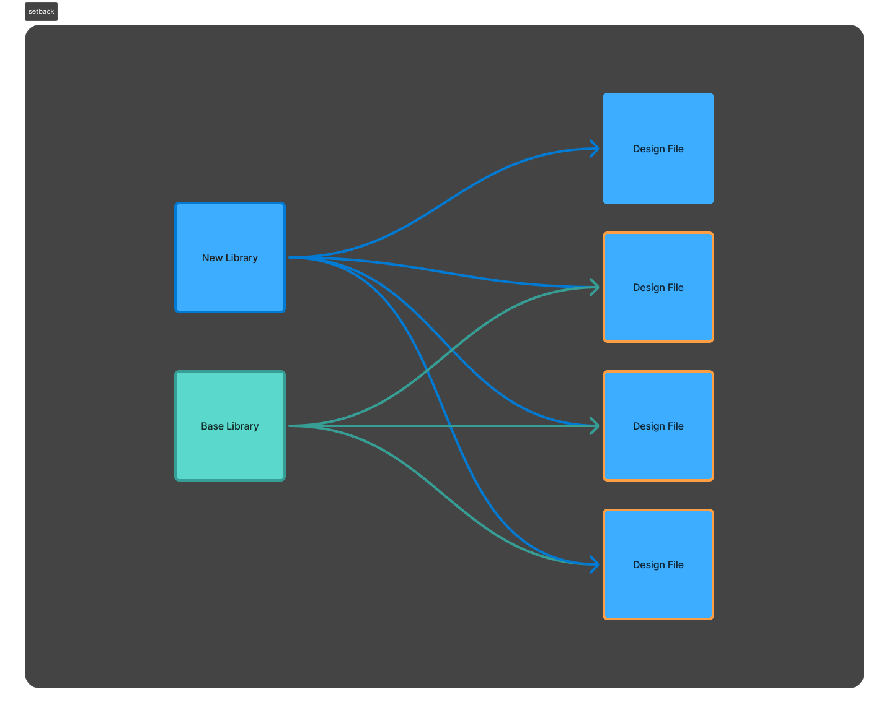
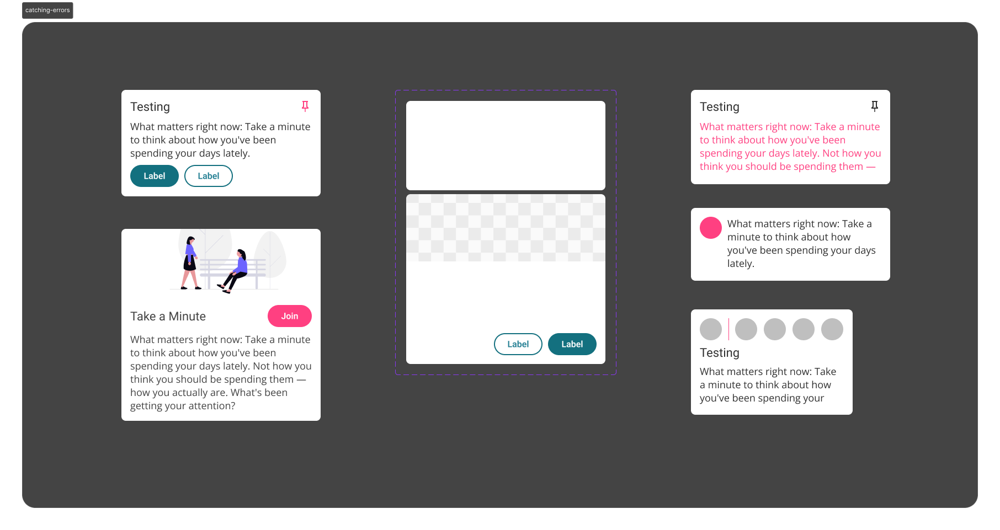

The app was turning into a patchwork
Lore runs on speed. Squads ship one-off flows constantly, and nothing is built to last. Small inconsistencies crept in, and the product started looking unprofessional.
A component library would have made it worse
The org brought in a design systems engineer, and he leaned toward a pure component-based library — the standard playbook.
I pushed back. Designers can’t modify components, so every variation means a new one. Across a team of 8, that library balloons fast, and each new component is another thing to maintain. We needed flexibility without chaos.
Tokens: change one thing, everything follows
Color, spacing, shadow — all of it pulled from one source, so every instance updates together.
Cards could look completely different from each other and still stay consistent underneath.

I built it as an island
Instead of extending the old library’s lineage, I started a brand-new one. It worked beautifully — for me. Designers couldn’t adopt it without breaking active workflows mid-project.
Which meant I’d repeated the exact mistake every systems designer before me had made: build something powerful, then expect the team to commit to it.
A system nobody could adopt without breaking their workflow wasn’t the system. It was still just my system.

I rebuilt the whole app in a week
Every screen, inside the new library — one “prime document” designers could copy from and land near wherever they’d left off. Adoption stopped requiring anyone to start over.
Adoption climbed, then stalled
The squad liked working in the new system, but compliance flattened short of where it needed to be. Something was still leaking designers back to old habits.
Old libraries were leaking back in
Some files had six or more legacy libraries attached, tangled together with no clear order of what was current. Manual review and a dev-side crawler bot grading squads on compliance confirmed it was happening everywhere.

I tried un-componentizing the worst offenders. The child links held. Old styles kept riding along, and error risk kept climbing.
Deleting the old libraries outright was on the table — but the org wasn’t ready to absorb that risk.
I turned every legacy style neon red
Then republished the libraries, so the contamination showed up in everyone’s files at once. Designers spotted the red instantly. Use of the old libraries plummeted.
Designers needed to see contamination, not just be told about it.

7 libraries deleted, 90%+ compliance, zero disruption
Three weeks after the red went live, the old system came out with nothing breaking behind it. One tokenized library, across the whole org.